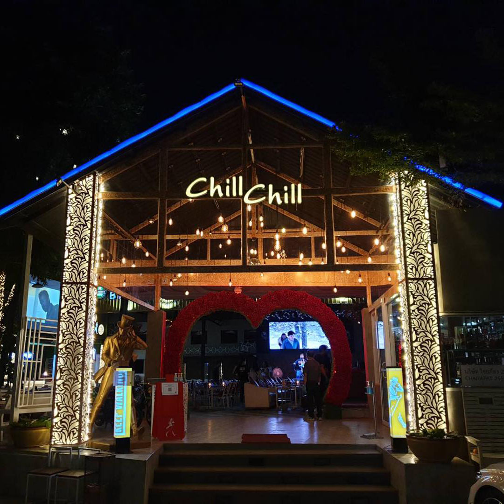
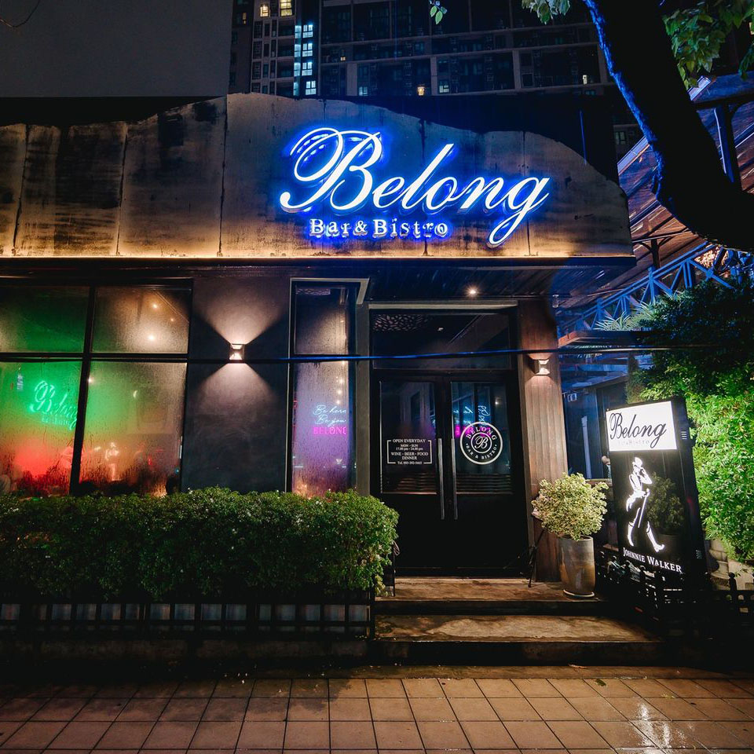
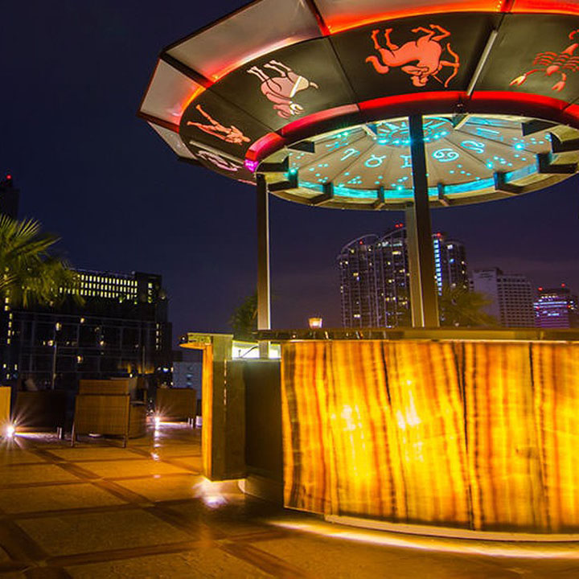
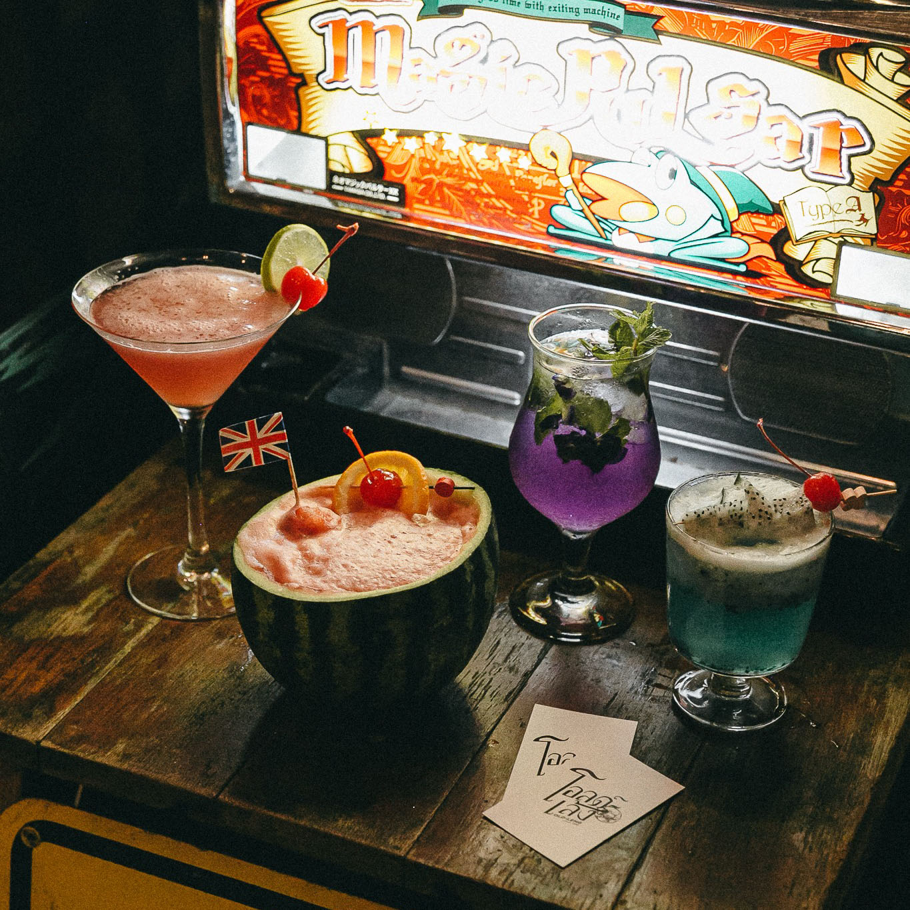
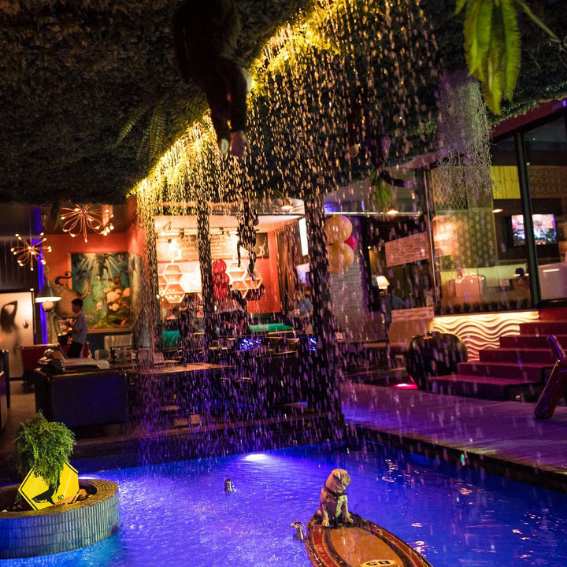

หน้าหลัก
ร้านอาหาร
แนะนำ
 1. Chill chill Restaurant
ร้านอาหารชิลๆ สบายๆ ผ่อนคลายอารมณ์ นั่งรับประทานอาหารอร่อยๆเคล้าเสียงดนตรีสดยามค่ำคืนที่แสนโรแมนติก
เปิดบริการทุกวัน : 17.00น.-02.00น.
โทร 095-717-4224
 2. Belong bar & Bistro
ร้านอาหารกี่งบาร์ ตกแต่งสไตล์บาร์แอนด์บิสโทรบวกกับกลิ่นอายความเป็นสวนกลางเมือง บริเวณทางเข้าที่แต่งด้วยต้นไม้เขียวขจี เป็นพื้นหลังถ่ายรูปสวยๆ ลงโซเชียลได้ และยังมีดนตรีสดทุกวันอีกด้วย
เปิดบริการทุกวัน : 18.00น.-02.00น.
โทร 095-392-5665
 3. Astro9 Skybar
ตั้งอยู่ที่ชั้นดาดฟ้าของโรงแรม 4 ดาว ซึ่งเป็น rooftop แห่งแรกย่านรัชดา-ห้วยขวาง ที่มีวิวพาโนราม่ามองเห็นวิวสวยๆของกรุงเทพ ตรงกลางมีค็อกเทลบาร์ที่มาในธีมโหราศาสตร์ พร้อมด้วยเก้าอี้สูง รอบๆบาร์มีโต๊ะเตี้ยล้อมรอบพร้อมด้วยที่นั่งสบายๆและโซฟา
เปิดบริการทุกวัน : 18.00น.-00.00น.
โทร 02-691-1688
 4. โอลด์-เล้ง
จุดเด่นของร้านนี้มีสไตล์ที่เป็นเอกลักษณ์ เหมือนร้านเหล้าจีนแบบย้อนยุคแต่ก้ยังมีความร่วมสมัยอยู่
เปิดบริการทุกวัน : 18.00น.-02.00น.
โทร 081-255-4845
 5. Maldives Bar Mengjai
ร้านอาหารสุดชิลที่ตกแต่งแบบเรียบง่าย เน้นบรรยากาศสบายๆ เหมือนอยู่ริมทะเล พร้อมเพลิดเพลินไปกับเสียงเพลงจากนักร้องและนักดนตรีคุณภาพ
เปิดบริการทุกวัน : 17.00น.-04.00น.
โทร 02-274-3829